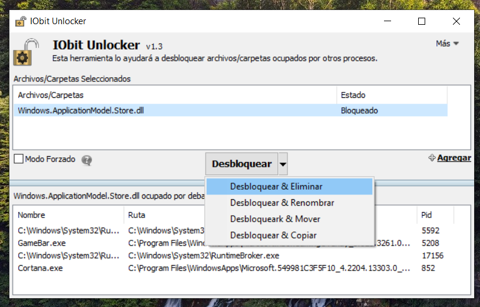
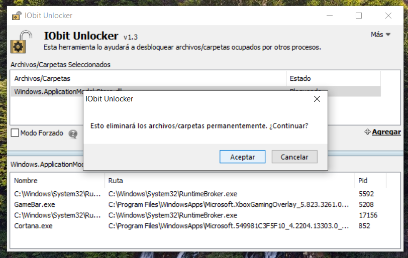
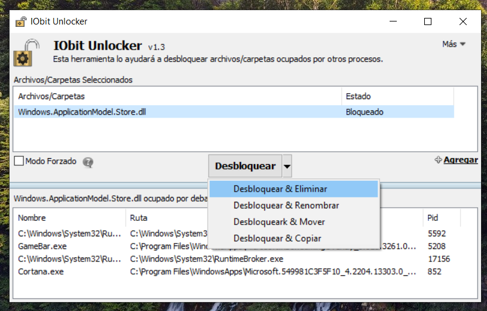
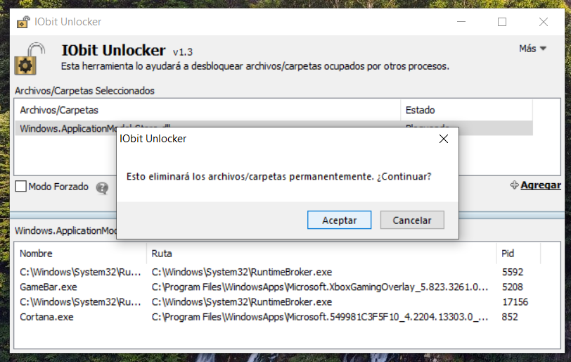

Información
Antes de Comenzar es Necesario Aclarar unos Puntos para Evitar Dudas o Problemas.
Puntos Importantes para Aclarar:
- Esto es Temporal: En Algunos Casos Es Permanente, si Llega a Pasar solo Repite el Proceso y Funcionara de Nuevo desde el Paso 3.
- Es Seguro: Los Siguientes Archivos no Dañaran tu Equipo, solo NO Borres Ningun Otro Archivo Fuera de la Guia.
- Si en Algun Punto Compras el Juego Todo tu Progreso Hecho Se Quedara Intacto.
Paso 1
Descargar la Version de Prueba de Minecraft Desde la Microsoft Store y los Archivos Necesarios.

Paso 2
Instalar la Aplicacion "IObit_setup".
Paso 3
Entrar a la Carpeta de "Reemplazar Archivos" > "System32" y COPIAR el Nombre del Archivo que esta Dentro.
Paso 4
Entrar a "Este Equipo" > "Windows (C:)" > "Windows" > "System 32" y en el Apartado de "Buscar en System32" Pegar el Nombre del Archivo que Copiamos Anteriormente.
 



Paso 5
Una vez Encontrado el Archivo, dar CLICK DERECHO y dar CLICK en "IObit Unlocker", Despues Tocar el Boton de Triangulo Hacia Abajo y "Desbloquear & Eliminar".
Paso 6
Una vez Eliminado el Archivo, Regresamos a "Reemplazar archivos" > "System32" y COPIAMOS el Archivo al que Copiamos el Nombre Anteriormente.


Paso 7
Volvemos a Entrar a "Este Equipo" > "Windows (C:)" > "Windows" > "System 32" y Pegamos el Archivo con Control + V o CLICK DERECHO y PEGAR.
Paso 8
REPETIR lo Mismo con la Carpeta "SysWOW64".

Paso 9
Despues de REEMPLAZAR AMBOS ARCHIVOS, vamos a la carpeta "Activar Servicios Xbox" y Ejecutamos el Programa de "eso.exe".


Paso 10
Buscamos los Servicios de Color Rojo (Casi Siempre Estan Hasta Abajo):
-XblGameSave
-XboxNetApiSvc
Una vez Encontrados, Damos CLICK DERECHO, "Start service" y Verificamos que Estan en Color Verde.